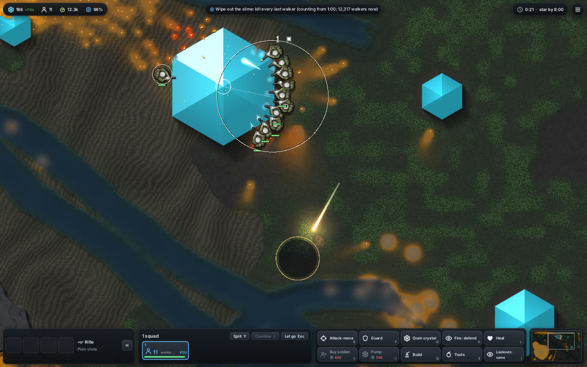
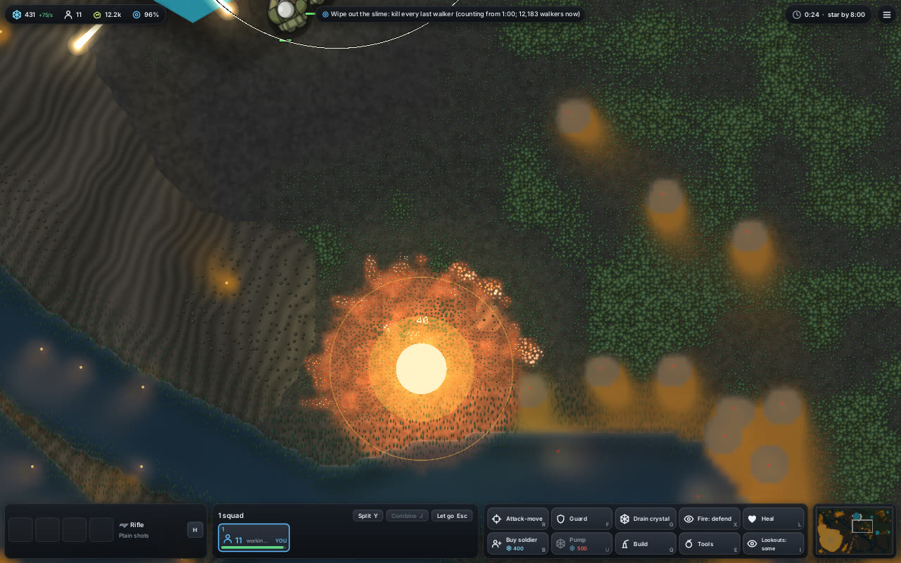
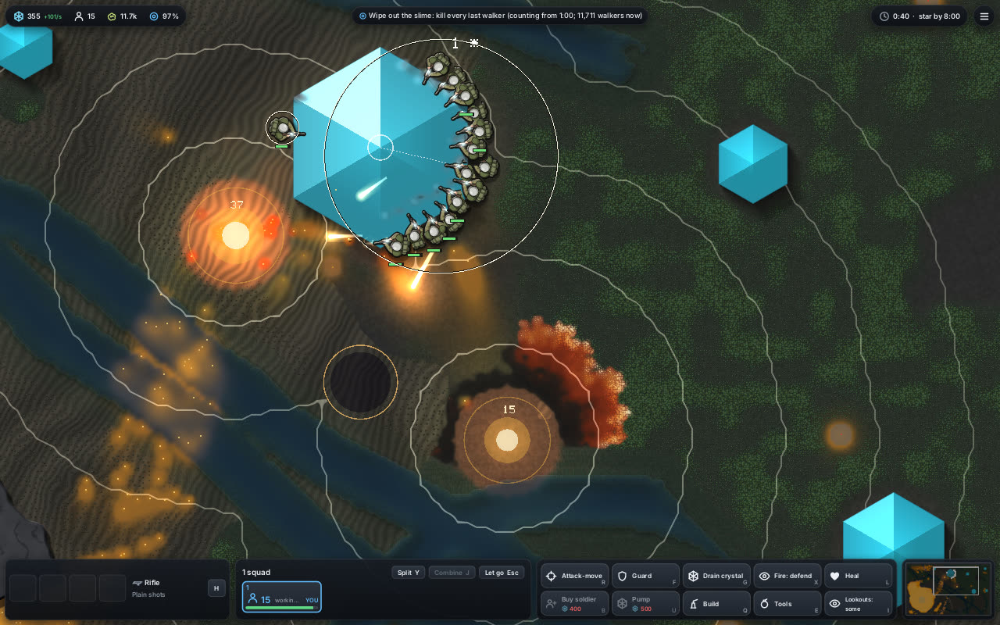
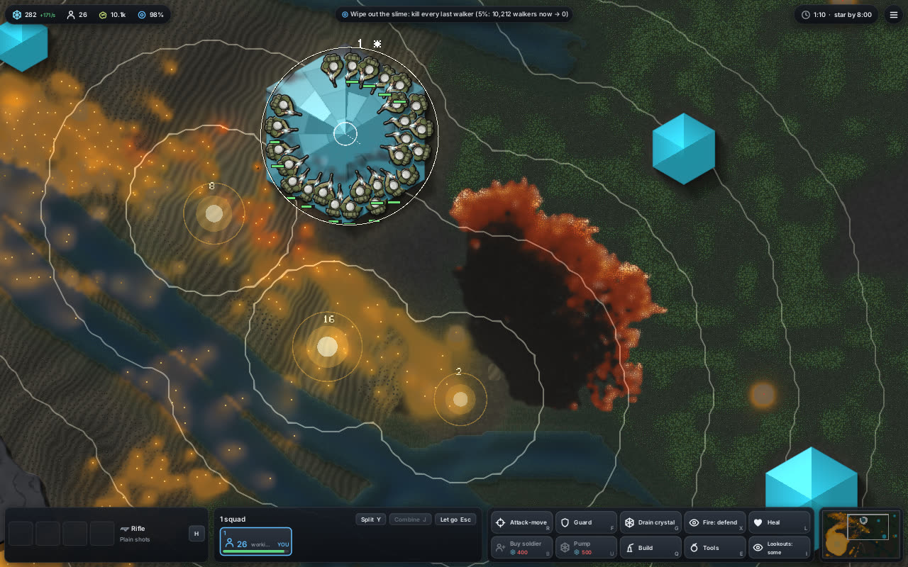

<title>Starfall and Boss Cores</title>
<meta name="claude:viewport-fit-sides" content="cover">
<style>
/* Layout: one reading column; each clip full width with its counts under it. */
:root {
  --bg: #f3f1ee; --fg: #1d1a17; --muted: #6b645c; --rule: #ddd6cc; --ore: #b5721a; --core: #b8323f;
  --display: "Space Grotesk", system-ui, sans-serif; --body: "Inter", system-ui, sans-serif;
}
@media (prefers-color-scheme: dark) { :root:not([data-theme="light"]) { --bg: #14120f; --fg: #ece6dc; --muted: #a39a8e; --rule: #2f2a24; --ore: #f0b04a; --core: #ef6b78; color-scheme: dark } }
:root[data-theme="dark"] { --bg: #14120f; --fg: #ece6dc; --muted: #a39a8e; --rule: #2f2a24; --ore: #f0b04a; --core: #ef6b78; color-scheme: dark }
body { background: var(--bg); color: var(--fg); font-family: var(--body); line-height: 1.55; }
main { max-width: 980px; margin: 0 auto; padding-block: 32px 64px; padding-left: max(16px, env(safe-area-inset-left, 0px)); padding-right: max(16px, env(safe-area-inset-right, 0px)); display: grid; gap: 28px; }
h1, h2 { font-family: var(--display); text-wrap: balance; margin: 0; }
h1 { font-size: 2rem; }
h2 { font-size: 1.25rem; }
p { margin: 0; max-width: 68ch; }
.lead { color: var(--muted); }
section { display: grid; gap: 10px; }
video, img { width: 100%; max-width: 100%; border-radius: 6px; display: block; background: #000; }
.counts { font-size: 0.9rem; color: var(--muted); font-variant-numeric: tabular-nums; }
.stills { display: grid; grid-template-columns: repeat(auto-fit, minmax(240px, 1fr)); gap: 12px; }
figure { margin: 0; display: grid; gap: 6px; min-width: 0; }
figcaption { font-size: 0.85rem; color: var(--muted); }
.ore { color: var(--ore); font-weight: 600; }
.core { color: var(--core); font-weight: 600; }
table { border-collapse: collapse; font-size: 0.9rem; font-variant-numeric: tabular-nums; }
td, th { text-align: left; padding: 4px 14px 4px 0; border-bottom: 1px solid var(--rule); }
.wrap { overflow-x: auto; }
</style>
<main>
  <header style="display:grid;gap:8px">
    <h1>Starfall and Boss Cores</h1>
    <p class="lead">Shop money now comes from the planet itself. <span class="ore">Ore</span> falls from the sky at least three times a planet, and sometimes many more. The slime races your squad to it. Broken mini-bosses and fruiting knots drop a <span class="core">core</span> worth 40 to 80 for 15 seconds. Planet 1, run seed 1, greedy bot. The falls are forced early (0:12 to 0:26) so they fit in the clip.</p>
  </header>

  <section>
    <h2>Zoom 6: shadow, impact, and the slime eating the ore</h2>
    <video src="starfall-z6.mp4" controls muted loop playsinline preload="metadata"></video>
    <p class="counts">0:14 to 1:30 of game time, at 1.5x speed to 0:34, then 3x. Each lump starts at 40 points. The greedy bot never goes for drops, so the slime takes most of them: at 1:10 the three lumps hold 8, 16 and 2. Slime on the map: 12,344 at 0:20, 10,134 at 1:10.</p>
  </section>

  <section>
    <h2>Zoom 12: one fall coming in</h2>
    <video src="starfall-z12.mp4" controls muted loop playsinline preload="metadata"></video>
    <p class="counts">0:18 to 0:40, at a quarter second a frame. The shadow darkens and the ore streaks in for 10 s, then lands as a blast. It kills slime within 4 cells, leaves a 20 s crater over 6, and here set the plants alight. The lure field's contour rings show where it pulls the slime from.</p>
  </section>

  <section>
    <h2>Stills</h2>
    <div class="stills">
      <figure><figcaption>0:21: a shadow and the falling ore</figcaption></figure>
      <figure><figcaption>0:24, zoom 12: landed, worth 40</figcaption></figure>
      <figure><figcaption>0:40: slime streams to the lumps</figcaption></figure>
      <figure><figcaption>1:10: the slime has eaten most of them</figcaption></figure>
    </div>
  </section>

  <section>
    <h2>The numbers</h2>
    <div class="wrap"><table>
      <tr><th>What</th><th>Value</th></tr>
      <tr><td>Falls a planet</td><td>3, then each more with chance 0.55, at most 12 (3 or 4 on about 2 planets in 3; 7 or more on about 1 in 10)</td></tr>
      <tr><td>When</td><td>between 0:50 and 10:00 after landing, at least 25 s apart, all drawn at the landing</td></tr>
      <tr><td>Warning</td><td>10 s shadow; the impact takes 60 health off a soldier under it</td></tr>
      <tr><td>Ore</td><td>30 + 10 per planet; lasts 60 s; a soldier by it takes 2.5 a second (more with Quick hands)</td></tr>
      <tr><td>Slime</td><td>smells it and is lured to it; each walker on it eats 1 a second times the slime's mass; eating half feeds its next surge</td></tr>
      <tr><td>Cores</td><td>40 + 40 x the mini-boss's grade (a fruit's: 40); 15 s</td></tr>
      <tr><td>Win pay</td><td>unchanged for now, so drops are on top of it</td></tr>
    </table></div>
  </section>
</main>
